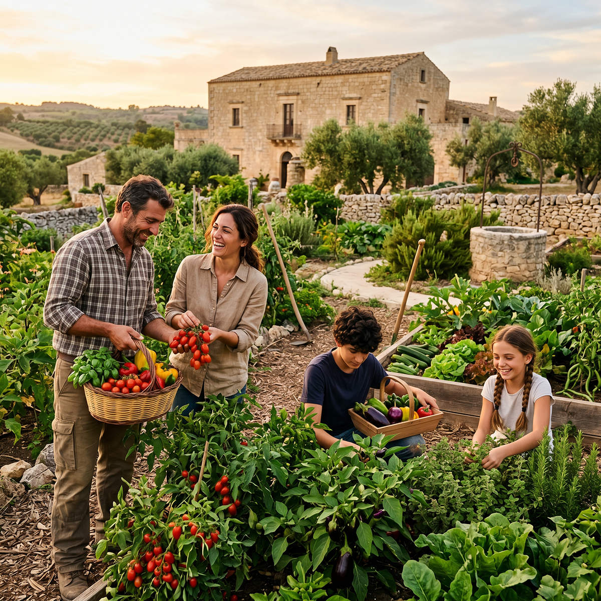
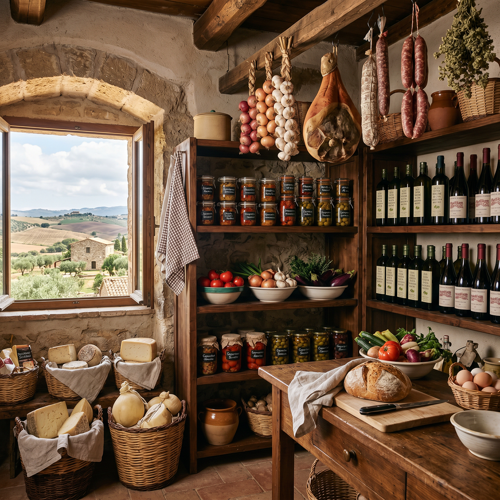
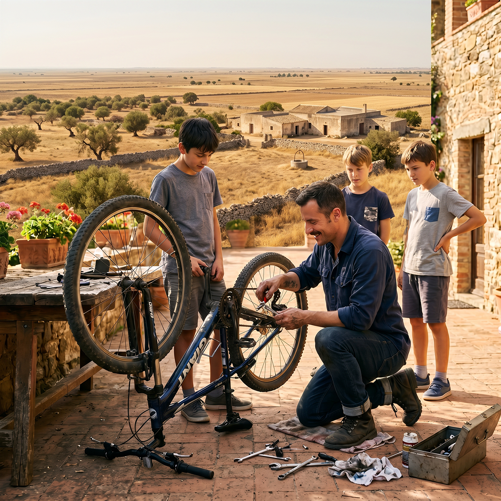
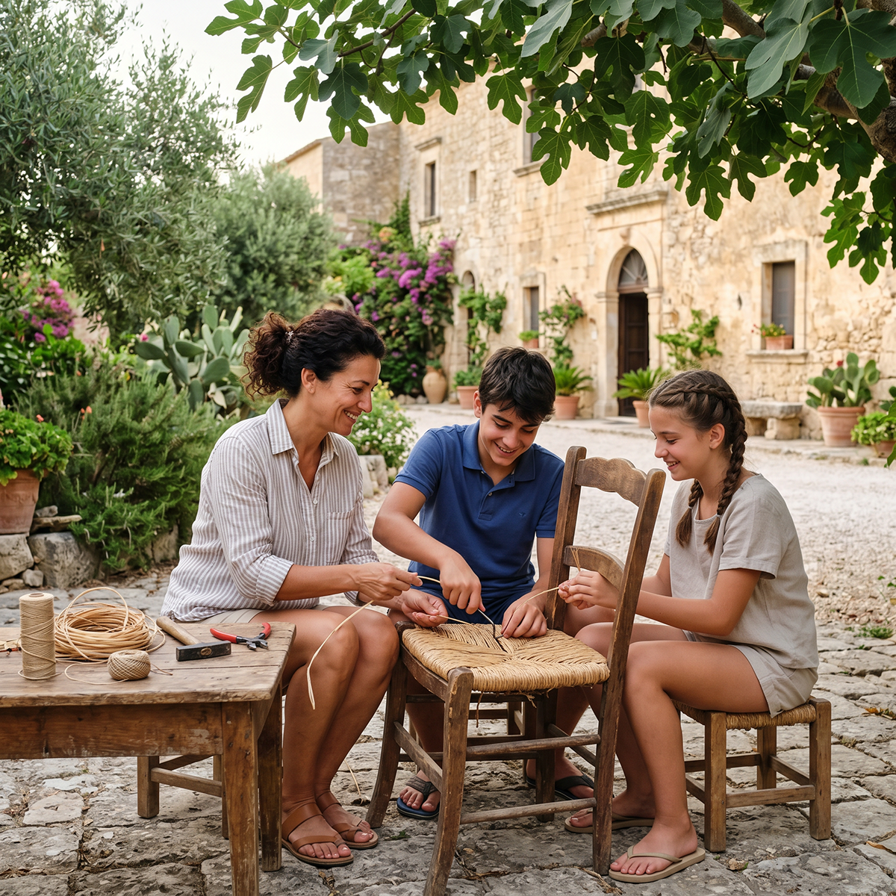
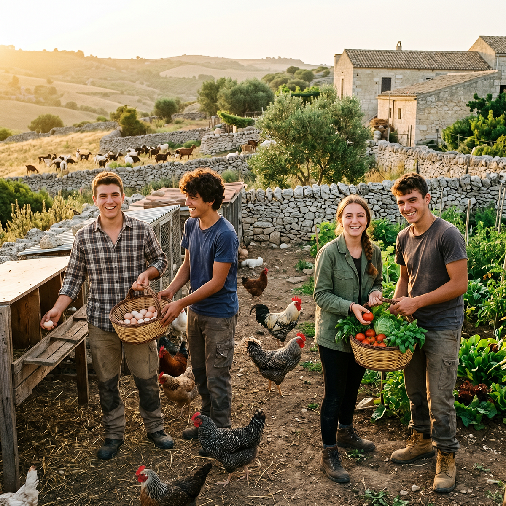
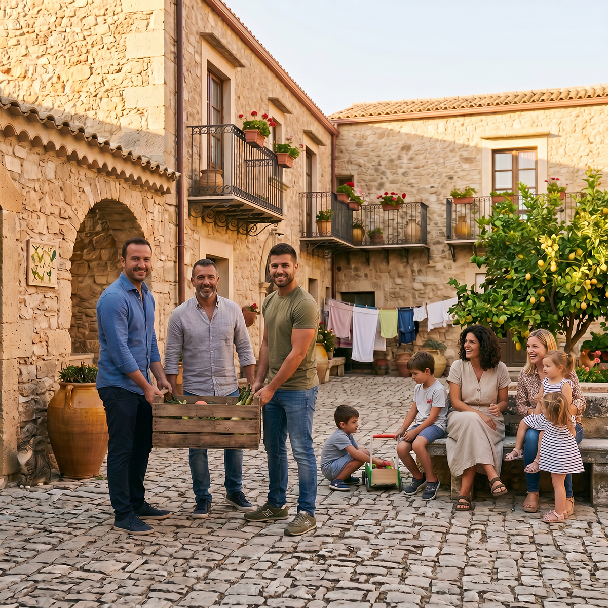
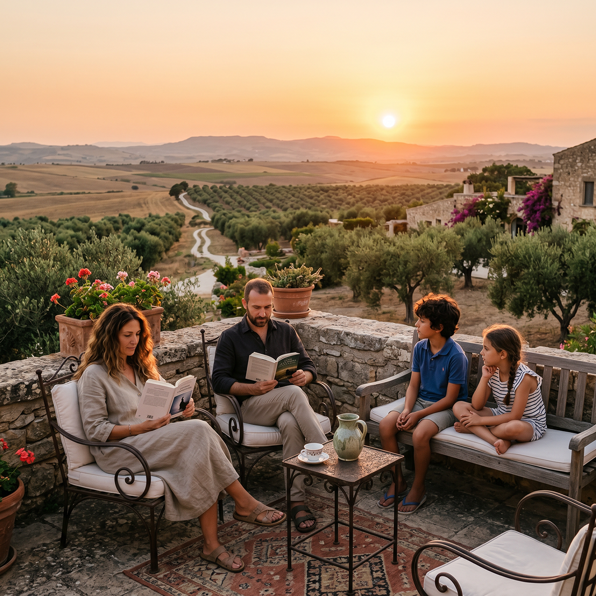
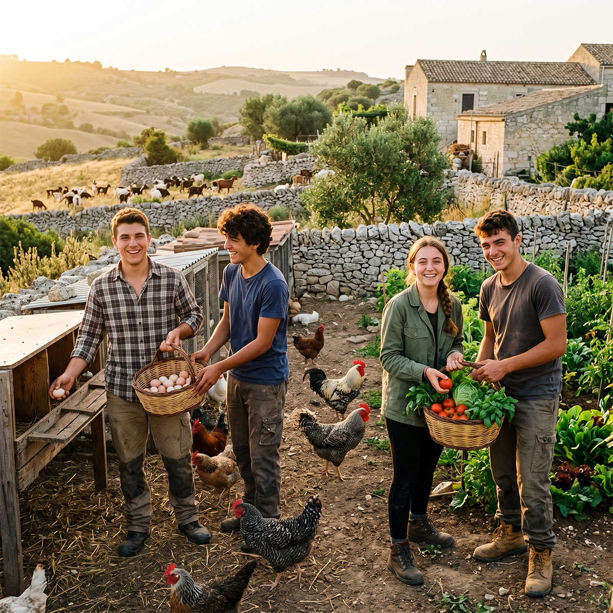
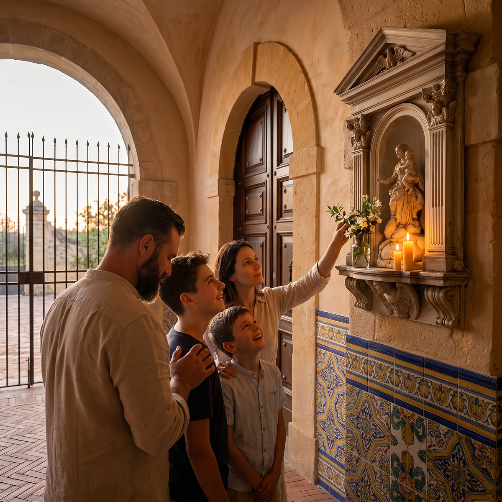

Nel cuore del progetto Baglio San Michele, nucleo pilota del Borgo Ideale, promuoviamo un modello di vita radicato nella tradizione siciliana, nella fede cristiana e nell’autonomia familiare. Ecco 10 scelte concrete che le famiglie residenti potranno incarnare quotidianamente.
Coltiva ciò che mangi
Una pianta di pomodoro o un piccolo orto familiare rappresenta solo l’inizio. Nel Baglio San Michele, ogni famiglia potrà dedicarsi agli orti collettivi e familiari, alla cura degli uliveti secolari e dei vigneti secondo metodi biodinamici tradizionali siciliani. Gli agricoltori/contadini biodinamici (almeno 4-6 unità full-time nella comunità) gestiranno rotazioni delle colture e rigenerazione del suolo, garantendo autosufficienza alimentare e trasmettendo competenze antiche alle nuove generazioni.


Accumula più di una settimana di scorte alimentari
Non per timori apocalittici, ma per affrontare serenamente ritardi, intemperie o interruzioni delle forniture. Nel Baglio, ciò si traduce in magazzini condivisi, produzione di conserve artigianali, olio, formaggi e salumi derivati dagli allevamenti interni (pollame, capre, maiali, pecore). La filiera corta e la trasformazione alimentare (fornaio con forno a legna, norcino) chiudono il ciclo produttivo, rendendo la comunità resiliente.
Impara un’arte che i tuoi nonni conoscevano
Conservare, lavorare la pietra iblea, potare, mendere o produrre formaggi. Il progetto privilegia il coinvolgimento di maestranze e artigiani locali ragusani per il restauro e la manutenzione. Laboratori comunitari trasmetteranno questi mestieri, in armonia con il Regolamento interno che valorizza reciprocità, identità e radicamento culturale siciliano.


Elimina un abbonamento e acquista uno strumento durevole
Un attrezzo da lavoro o da cucina serve per generazioni; un abbonamento erode risorse. Nel Baglio, le famiglie investiranno in strumenti per l’agricoltura, la zootecnia e l’artigianato (es. attrezzi per potatura, macchinari semplici per trasformazione), sostenuti dal Consorzio Locale che favorisce l’economia circolare e il trattenimento di valore nel territorio ragusano.
Insegna ai figli a riparare, non a sostituire
La riparazione è mentalità radicata nella responsabilità cristiana. I bambini del Baglio cresceranno nella cappella privata, negli spazi comuni (biblioteca, sala del pranzo, studio) e nei campi, apprendendo cura degli animali, manutenzione delle strutture in pietra e mestieri rurali. Questo educa alla stabilità familiare e alla trasmissione di valori di fede, ordine e autosufficienza.


Avvicinati alla fonte del tuo cibo
Conosci direttamente il produttore. Nel Baglio San Michele, gli allevamenti (pollame, capre, maiali, pecore con pascolo rotazionale) e gli orti integrati permettono a ogni famiglia di sapere esattamente da dove proviene il cibo quotidiano. Questo rafforza legami comunitari autentici, in linea con la vocazione agricola e zootecnica delle terre circostanti.
Costruisci almeno una relazione su cui poter contare
Una persona reale, non virtuale, che si presenti. La comunità del Baglio, governata dal Capitolo dei Savi e ispirata alla Regola benedettina e alle universitates rurali siciliane, promuove mutuo soccorso, reciprocità e coesione tra le 14 famiglie selezionate (nuclei stabili, orientati a valori cristiani). La cappella e gli spazi condivisi favoriscono relazioni profonde e sostegno reciproco.


Trascorri un fine settimana senza rumore esterno
Senza distrazioni digitali. Tra le mura storiche restaurate del Baglio, la terrazza, il giardino e la quiete della campagna iblea, le famiglie riscopriranno la preghiera, la conversazione, la lettura nella biblioteca e il contatto con la natura, nutrendo lo spirito e la vita familiare secondo i principi del Sicilian Slow Living.
Investi in qualcosa che produce, non che impressiona
Alcune galline o un albero da frutto generano valore duraturo. Nel progetto, le risorse delle famiglie e del Consorzio sono destinate alla produttività (allevamenti, orti, artigianato), supportando l’autosufficienza energetica, alimentare e sociale, in contrapposizione a modelli consumistici.


Chiediti per cosa stai realmente lavorando
Se non è per la famiglia, il tempo dedicato alla fede, all’educazione dei figli e al futuro della comunità, ridisegna gli obiettivi. Nel Baglio San Michele, la scelta di residenza stabile in appartamenti semi-finiti di pregio (all’interno del baglio storico e annessi) risponde a questa chiamata: un nido radicato, dove la vita quotidiana integra lavoro, preghiera (ora et labora), bellezza architettonica e autonomia, lontano dalla precarietà urbana.
Queste scelte possono apparire “non convenzionali” viste da fuori. Ma la vera follia è dipendere interamente da un solo lavoro, da un sistema fragile e da catene di fornitura lontane. Nel Baglio San Michele queste pratiche non sono opzionali: sono il tessuto stesso della comunità.